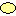

Use Case Diagram

The Use Case diagram displays the
user's view of a system. It
represents what
the systems
does, as opposed to how it
does it. The following concepts can be used to build your Use Case
diagrams in Open ModelSphere:
- Actor

- Use Case 
- Relationship

- Object (non human actor)

To
add an
actor
- Select the actor
creation tool located in the UML modeling toolbar.
- With the actor
tool selected, click anywhere inside the diagram window.
To
add a use case
- Select the use
case creation tool located in the UML modeling toolbar.
- With the use
case tool
selected, click anywhere inside the diagram window.
To add an Object (non human actor)
- Select the object creation tool located in the UML modeling
toolbar.
- With the object creation tool selected, click anywhere
inside the diagram window.
To add a Relationship
- Select the relationship creation tool
located in the UML
modeling toolbar ( or
 )
)
- Choose one of the relationship displayed
in the toolbar.
- With the Relationship tool selected,
click somewhere in the
middle of the source use case, then, in the middle of the target use case.
Assign a UML
sterotype to an object
- Select any object from the diagram or
from the explorer.
- In the design
pannel,
choose from the list UML Sterotype.
Assign a
UML constraint to an object
- From the explorer or from the diagram
right-click an object and
click the properties tool

- Select the UML Constraint tab,
click the Link button.
- Select a UML Constraint from
the pop-up window.
Here are some of the more advanced features
available in Open ModelSphere to work with Use Case diagrams :
- UML stereotypes and constraints
- Elaboration of Use Cases into
Sequence diagrams (specification)
- Display additional attributes
on Use Cases, such as the cost or number
- Decomposition and hierarchical
overview diagrams
- Relationships with
communicates, extends, uses or
includes
The common
concepts such as Semantic Links
and Graphical Notes can also be used
to
enrich your Use Case diagrams.
Specifying Use Cases
By using the
decomposition tool  on a Use Case, ModelSphere lets you
specify using
any of the following diagrams: Use Case, Sequence, Collaboration,
Statechart or Activity. When you select the decomposition tool and
click on the Use Case you want to specify, ModelSphere presents you
a diagram selection dialog (shown below). Select the diagram type
and ModelSphere will create the sub level for you, with an empty
diagram of the chosen kind.
on a Use Case, ModelSphere lets you
specify using
any of the following diagrams: Use Case, Sequence, Collaboration,
Statechart or Activity. When you select the decomposition tool and
click on the Use Case you want to specify, ModelSphere presents you
a diagram selection dialog (shown below). Select the diagram type
and ModelSphere will create the sub level for you, with an empty
diagram of the chosen kind.